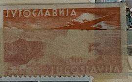
| SOURCE | TITLE| IMAGE MATCH | click to source page |
| Dreamstime.com | 4,140 Mountain Stamp Stock Photos - Free & Royalty-Free Stock Photos from Dreamstime - Page 39 | 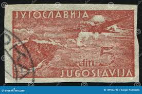 |
| eBay | Triest B, VUJA, 1954, Airmail, Sava Bridge, used | eBay | 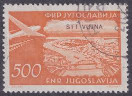 |
| Stamp Community Forum | Inherited Collection And Could Use Some Help - Stamp Community Forum | 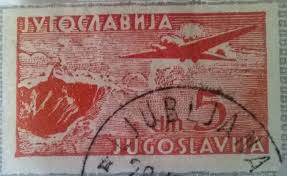 |
| vividagallery.com | Yugoslavia Airmail Mountain Village Alpine Landscape Aviation Sc Duvet Cover by Vivida Gallery - Vivida Gallery | 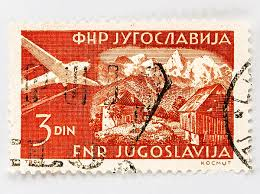 |
| HipStamp | Yugoslavia Scott C40 Used Airmail stamp | Europe - Yugoslavia, Air Mail Stamp / HipStamp | 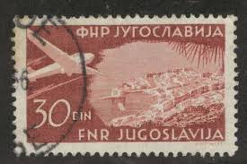 |
| Alamy | Stamp printed in the Yugoslavia shows Plane over Dubrovnik, circa 1951 Stock Photo - Alamy | 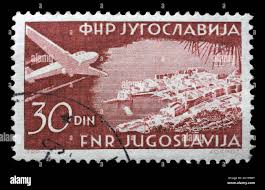 |
| HipStamp | DYNAMITE Stamps: Yugoslavia Scott #C40 - USED | Europe - Yugoslavia, Air Mail Stamp / HipStamp | 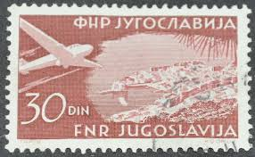 |
| eBay | Aviation Used Yugoslavian Stamps for sale | eBay | 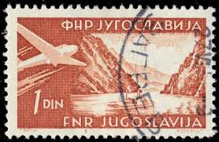 |
| Alamy | Postage stamp yugoslavia hi-res stock photography and images - Page 17 - Alamy | 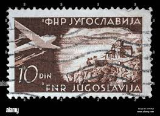 |
| HipStamp | Yugoslavia; 1951; Sc. # C50; Used Single Stamp | Europe - Yugoslavia, Air Mail Stamp / HipStamp | 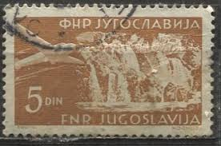 |
| vividagallery.com | Yugoslavia Airmail Mountain Village Alpine Landscape Aviation Sc Poster by Vivida Gallery - Vivida Gallery | 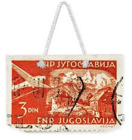 |
| eBay UK | Air Mail Yugoslavian Stamps for sale | eBay UK | 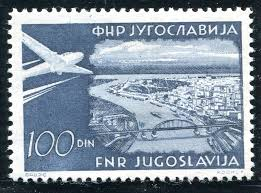 |
| eBay | Yugoslavia Air Mail Stamps for sale | eBay | 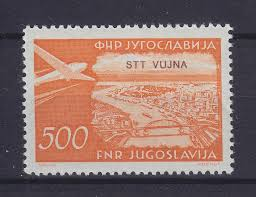 |
| Dreamstime.com | Stamp Issued in Yugoslavia Shows Danube Breakthrough at the Iron Gate, Airplanes and Landscapes Series, Circa 1951 Editorial Photography - Image of europe, hobby: 190207957 | 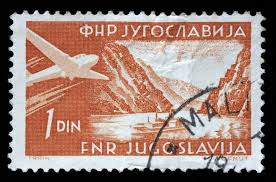 |
| Alamy | Stamp issued in Yugoslavia shows Gozd-Martuljak, Airplanes and Landscapes series, circa 1951 Stock Photo - Alamy | 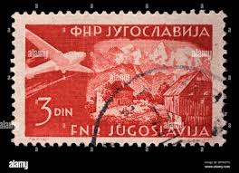 |
| Dreamstime.com | Plane Over Cairo City in Stamp Editorial Stock Image - Image of hobby, hungarian: 180684404 | 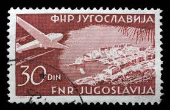 |
| Alamy | YUGOSLAVIA - CIRCA 1951: stamp printed by Yugoslavia, shows Torches and Star, circa 1951 Stock Photo - Alamy | 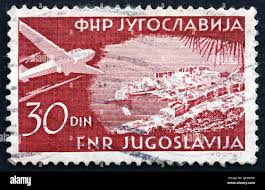 |
| eBay | Aviation Air Mail Yugoslavian Stamps for sale | eBay | 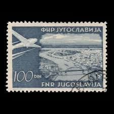 |
| eBay | Yugoslavia Stamp 1951 Scott C50 AP16 Airmail 5 Din Set of 2 | eBay | 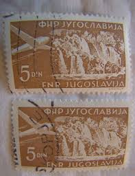 |
| eBay | Postcard Church In The Lake Bled Yugoslavia Slovenia RPPC Postmarked | eBay | 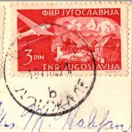 |
| Shutterstock | 4+ Hundred Aviation Yugoslavia Royalty-Free Images, Stock Photos & Pictures | Shutterstock | 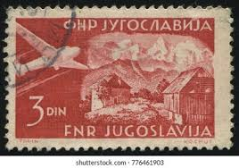 |
| CollectorBazar | YUGOSLOVAKIA Early AIR MAIL Stamp PLANE 5 DIN Fine Used | 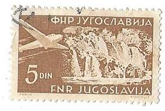 |
| eBay | YUGOSLAVIA VFH 1951 SG683 100d GREY AIRPLANES AND LANDSCAPES Cancelled (DX6) | eBay | 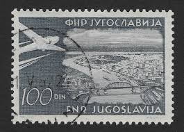 |
| Dreamstime.com | Postage Stamp Printed in Yugoslavia Shows Plitvice Waterfall, Airmail Serie, Circa 1952 Editorial Photo - Image of view, correspondence: 230686351 | 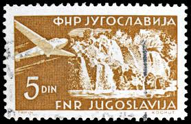 |
| eBay | Yugoslavia 1951, (Mi.Nr.654 Bl5), ZEFIZ Exhibition, souvenir sheet | eBay | 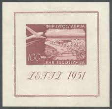 |
| postbeeld.com | Stamps with the theme Parachuting - PostBeeld - Online Stamp Shop - Collecting | 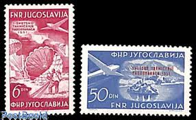 |
| Shutterstock | 4+ Thousand Yugoslavia Stamp Royalty-Free Images, Stock Photos & Pictures | Shutterstock | 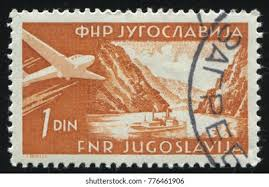 |
| Alamy | Postage stamp yugoslavia hi-res stock photography and images - Alamy | 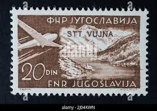 |
| vividagallery.com | Yugoslavia Airmail Mountain Village Alpine Landscape Aviation Sc Round Beach Towel by Vivida Gallery - Vivida Gallery | 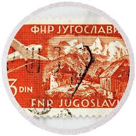 |
| Shutterstock | Jet Stamp: Over 3,383 Royalty-Free Licensable Stock Photos | Shutterstock | 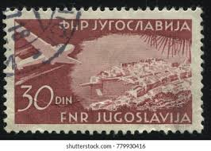 |
| eBay | Good (G) Mint Never Hinged/MNH Yugoslavian Stamps for sale | eBay | 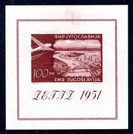 |
| Violity | Югославия ( Триест Зона В) 1954 г. № 141 ** (111914225) - buy on Violity | 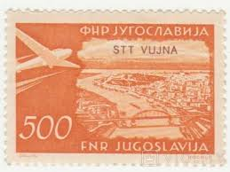 |
| Stamp Auction | catalog Level 3 | 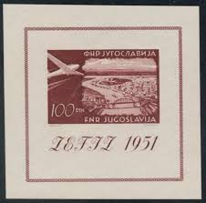 |
| vividagallery.com | Yugoslavia Airmail Mountain Village Alpine Landscape Aviation Sc Metal Print by Vivida Gallery - Vivida Gallery | 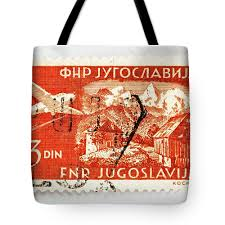 |
| eBay | Yugoslavia S/S Zefiz Int Philatelic Expo 1951 MH-300 Euro | eBay | 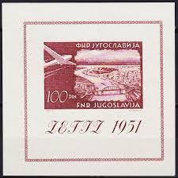 |
| Cherrystone Auctions | U.S. & Worldwide Stamps & Postal History - September 13-14, 2006 - YUGOSLAVIA | 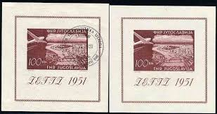 |
| Alamy | Commemorative stamp of Plitvice waterfalls from the former Yugoslavia with the overprint of the free territory of Trieste, zone B of the year 1954 Stock Photo - Alamy | 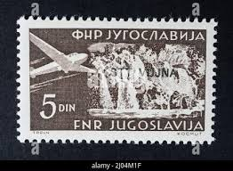 |
| eBay | Yugoslavia 1951 YV Bloc 4 MLH VF | eBay | 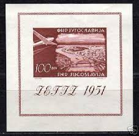 |
| eBay | Yugoslavia 1951 The First National Stamp Exhibition, Zagreb MNH | eBay | 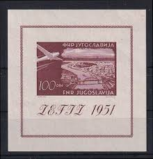 |
| X | Yugoslavia SG (@yugosg) / Posts / X | 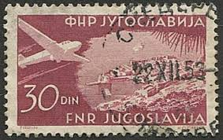 |
| eBay | EDW1949SELL : YUGOSLAVIA 1951 Scott #C43 Fresh & Very Fine, Mint NH Catalog $175 | eBay | 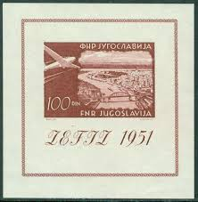 |
| eBay | YUGOSLAVIA 1951 AIRMAIL BELGRADE souvenir sheet (Scott C43) VF MNH | eBay | 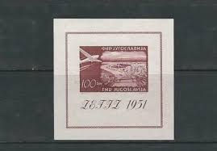 |
| STEVE LEVINE STAMPS-PLUS | YUGOSLAVIA Scott # 2537, 2001 Int'l Federation of Philately (FIP), 75th Anniversary - SteveLevineStamps-Plus | 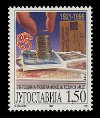 |
| eBay | NUMISMATICS-EU | eBay Stores | 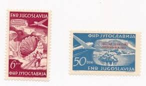 |
| eBay | TRIESTE B 1949 22-23 ** MNH FLAWLES SET AIR MAIL UPU (F6194 | eBay | 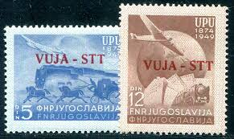 |
| eBay.de | Jugoslawien 1951 Block 5 Landes Briefmarken Ausstellung postfrisch | eBay.de | 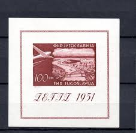 |
| Shutterstock | 4+ Thousand Yugoslavia Stamp Royalty-Free Images, Stock Photos & Pictures | Shutterstock | 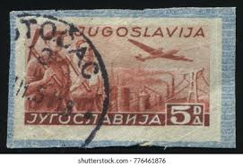 |
| Amazon UK | Prophila Collection Yugoslavia 644-652 (complete.issue.) unmounted mint/never hinged ** MNH 1951 Aircraft (Stamps for collectors) Airplanes/Balloons/Zeppelins/Aviation : Amazon.co.uk: Toys & Games | 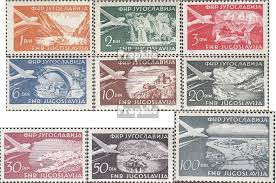 |
| eBay | Used Souvenir Sheet Yugoslavian Stamps for sale | eBay | 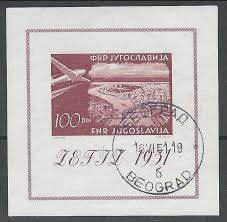 |
| eBay | Yugoslavia stamp C43 MH | eBay | |
| eBay | YUGOSLAVIA Scott# C50-53 Used Set. | eBay | |
| eBay | Yugoslavia 1958, (Mi.Nr.852), Sutjeska Battle ** | eBay | |
| eBay | YUGOSLAVIA 1951 AIRMAIL BELGRADE SOUVENIR Scott# C43 VF MNH | eBay | |
| eBay | BOSNIA 1000 Dinara ND1992 aXF P2a Serial No AF 8078928 Original seal | eBay | |
| Todocolección | yugoslavia -1922/24- sobrecargados- serie compl - Buy Antique stamps of Yugoslavia on todocoleccion | |
| eBay | BOSNIA 1000 Dinara ND1992 XF P2c Serial No AF 8162515 Original seal | eBay | |
| Freestampcatalogue.com | Stamps from Trieste B-Zone - Freestampcatalogue.com - The free online stampcatalogue with over 500.000 stamps listed. | |
| Catawiki | San Marino 1931/1943 - Stämpelskatt, fem utgåvor, 37 hela värden - Sassone N. 32/64 - Catawiki | |
| buyhungarianstamps.com | 15-16 Trieste (Zone B) - Yugoslavia Nos. 266 and 267 Overprinted in C – Eastern Europe Postage Stamps | Hungaria Stamp Exchange | |
| eBay | Cats Yugoslavian Stamps for sale | eBay |